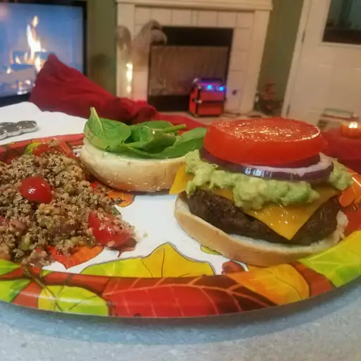

Burger

Cooking Information
- Prep Time = 5 Minutes
- Cook Time = 15 Minutes
- Total Time = 20 Minutes
- Servings = 4
Description
This quick and easy recipe will feed the whole family, with 4 burger
patties that you can whip up in no time flat. Share the delicious
juicy, meaty, and precious burgers.
Ingredients
- Ground beef
- Burger buns
- One whole onion
- Ketchup
- Mustard
- Lettuce
- Slices of American cheese
- One egg
- Salt and pepper
- Bread crumbs
- Mayonnaise
Cooking Steps
- Whisk the egg in a large bowl with salt and pepper
- Add ground beef and bread crumbs to bowl
- Form the mixture into 3/4 inch patties
- Place patties on grill
- Cook for 6 to 8 minutes each side
- Make sure beef is at least 160 degrees F
- Assemble burger